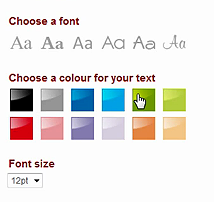
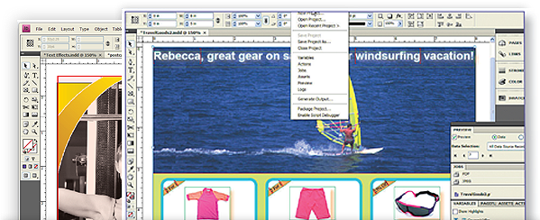

<?xml version="1.0" encoding="UTF-8"?><rss version="2.0"
	xmlns:content="http://purl.org/rss/1.0/modules/content/"
	xmlns:wfw="http://wellformedweb.org/CommentAPI/"
	xmlns:dc="http://purl.org/dc/elements/1.1/"
	xmlns:atom="http://www.w3.org/2005/Atom"
	xmlns:sy="http://purl.org/rss/1.0/modules/syndication/"
	xmlns:slash="http://purl.org/rss/1.0/modules/slash/"
	>

<channel>
	<title>Dynamic imaging software &#8211; Web-to-print &amp; dynamic imaging directory</title>
	<atom:link href="http://www.zetaprints.com/directory/category/dynamic-imaging-software/feed/" rel="self" type="application/rss+xml" />
	<link>http://www.zetaprints.com/directory</link>
	<description>Just another WordPress site</description>
	<lastBuildDate>Thu, 22 Dec 2011 09:45:34 +0000</lastBuildDate>
	<language>en-US</language>
	<sy:updatePeriod>hourly</sy:updatePeriod>
	<sy:updateFrequency>1</sy:updateFrequency>
	<generator>https://wordpress.org/?v=4.4.1</generator>
	<item>
		<title>ROI360</title>
		<link>http://www.zetaprints.com/directory/roi360/</link>
		<pubDate>Thu, 17 Nov 2011 10:01:15 +0000</pubDate>
		<dc:creator><![CDATA[atanas]]></dc:creator>
				<category><![CDATA[Dynamic imaging software]]></category>
		<category><![CDATA[Web-to-print software]]></category>

		<guid isPermaLink="false">http://www.zetaprints.com/directory/?p=1057</guid>
		<description><![CDATA[ROI360 offer web-to-print and dynamic imaging solutions based on Pageflex. They are an up-market, high cost Pageflex reseller offering hosted solutions, Pageflex extensions and custom services around the products. The base technical capabilities of the product are the same for as for any other Pageflex implementation. ROI 360 SaaS ROI360 offers fully managed and fully [&#8230;]]]></description>
				<content:encoded><![CDATA[<p><a title="ROI360" href="http://www.roi360.co.uk/">ROI360</a> offer web-to-print and dynamic imaging solutions based on <a title="Pageflex.com" href="http://www.pageflex.com/">Pageflex</a>. They are an up-market, high cost Pageflex reseller offering hosted solutions, Pageflex extensions and custom services around the products. The base technical capabilities of the product are the same for as for any other Pageflex implementation.</p>
<h2>ROI 360 SaaS</h2>
<p>ROI360 offers fully managed and fully hosted Pageflex solutions. They provide technical support, training, IT infrastructure, Pageflex software, custom development and more. There are no per-transaction fees, but the pricing is at the high end of scale.</p>
<h2>Pageflex storefront</h2>
<p>ROI360 have chosen <a title="Pageflex.com" href="http://www.pageflex.com/">Pageflex</a> as the base technology solution to offer to their customers. The Pageflex storefront allows you to set up branded web portals for customizing and distributing all types of documents and it can be used as a web-to-print and dynamic imaging solution.  ROI360 claims to have developed over 75 extensions for the Pageflex system, but only a few of them are listed on their website:</p>
<ul>
<li><strong>Variable database</strong> &#8211; shows template variables in a data file accessed from a drop down list as part of the &#8220;form filling&#8221; step;</li>
<li><strong>XML export</strong> &#8211; Automatically creates a XML file containing required item information and send it to a third party system ERP, MIS or CRM system;</li>
<li><strong>Text style pack</strong> &#8211; an extension that allows additional text options to be available.</li>
<li><a title="Pageflex extensions" href="http://www.roi360.co.uk/pageflex-products/pageflex-extensions/">more</a></li>
</ul>
<h3>E-commerce</h3>
<p>A no-frills online shop like Pageflex storefront is usually enough for simple corporate web-to-print ordering, but may struggle against fast and sleek consumer-orientated online shops.</p>
<p>Pagelfex as an e-commerce solution is outdated and falls behind what today&#8217;s e-commerce software has to offer. Compare the features to something like <a title="Magento e-commerce" href="http://www.magentocommerce.com/">Magento </a>or <a title="BigCommerce e-commerce" href="http://www.bigcommerce.com/">BigCommerce</a> to see the difference. Just having a shopping cart and credit card payments is no longer enough, specially in a B2C situation.</p>
<h3>Storefront branding</h3>
<p>Branding and interface customization are limited to <a title="branding" href="http://www.roi360.co.uk/blog/2011/09/creating-storefront-themes-95148/">basic CSS and HTML changes</a>. The overall structure of the storefront is static but the colors, images and backgrounds can be customized to fit a certain design. External content can also be added to the sidebar.</p>
<p></p>
<h2>Web-to-print personalization features</h2>
<p>The personalization and ordering process is easy to use and is separated into 3 basic steps (<em>Form filling, Options and Finish</em>). It is powered by Pageflex.</p>
<h3>Variable web-to-print text</h3>
<p>Variable text frames within the design are represented by corresponding text input fields in a form. Customers are able to input their own texts, update the preview image and get a PDF preview file right away.</p>
<p></p>
<p>Extensions such as the &#8220;<em>Text style pack</em>&#8221; plugin that was developed by ROI360, introduce additional text editing features in the personalization process.</p>
<div style="display: table;">
<p></p>
<div style="position: relative; top: 35px; display: inline;">With this extension, users can change the font size, weight, color and even the font face it self.</div>
</div>
<h3>Variable web-to-print images</h3>
<p>Variable web-to-print images can be supplied by the site&#8217;s admin as stock images or can be uploaded by users.Uploaded images remain in the image library for future use.</p>
<p>There is no way to edit an image once it is uploaded, nor there is a way to delete it. Users can rename or hide them. Unfortunately the quality of the thumbnails in the library make images unrecognizable as in the screenshot below.</p>
<p><a href="../../../wp-content/uploads/2011/11/pageflex-image-library.png"></a></p>
<p>Compare the thumbs above with the normal quality thumbs of the same images.</p>
<p><a href="../../../wp-content/uploads/2011/11/non-pageflex-thumbs.png"></a></p>
<h3>Template autoresizing</h3>
<p>A very impressive auto-resizing feature allows customers to change the size of the output document on the fly, according to pre-programmed rules. All elements on the page shift according to a complex set of rules.</p>
<p>This design was resized from an A4 to a square:</p>
<p><a href="../../../wp-content/uploads/2011/11/roi360-autoresize2.png"></a></p>
<p>and a rectangular shape</p>
<p><a href="../../../wp-content/uploads/2011/11/roi360-autoresize1.png"></a></p>
<p>As you can see, the template itself is very simple. Add few more graphic elements and it would fall apart. Even as is, the text became unreadable.</p>
<p>It may actually work on simple templates like this when the change is not too far from the original size and the general proportions are retained.</p>
<h3>Variable colors</h3>
<div style="display: table;">
<p></p>
<div style="position: relative; top: 35px; display: inline;">
<p>Users can change the overall look of the design with a single click, as part of the personalization process. Shape colors, images and overall style of the design can be grouped into separate sets that are represented as stylized buttons at the top of the input form. This allows owners to offer a completely different style of the same business card or just a different background color.</p>
</div>
</div>
<h2>Email templates</h2>
<p>One of the cross-media features is preparing an HTML email layout from a template. The user gets the same form as for web-to-print and can see a live HTML preview, which is later merged with the database. It is a good feature for non-technical users and should be OK for basic applications. Compare it to what <a title="newsletters for web-to-print" href="http://mailchimp.com/features/" target="_blank">MailChimp</a> and other newsletter services can do these days <a title="newsletter pricing" href="http://mailchimp.com/pricing/" target="_blank">for free or next to nothing</a>.</p>
<p><a href="../../../wp-content/uploads/2011/11/ROI360-email-preview.png"></a><a href="../../../wp-content/uploads/2011/11/ROI360-email-template.png"></a></p>
<p>&nbsp;</p>
<h2>Template creation</h2>
<p>Designers can turn <a title="Adobe InDesign" href="http://www.adobe.com/cfusion/tdrc/index.cfm?product=indesign">Adobe InDesign</a> artwork documents into variable data web-to-print templates using the <a title="About Pageflex Studio ID" href="http://www.roi360.co.uk/pageflex-products/pageflex-studio-id/">Pageflex Studio ID</a> tool which adds an additional palette within InDesign, used to assign personalization fields.</p>
<p></p>
<h2>File uploading</h2>
<p>Custom file uploading is basic, but has a built-in filter for file types. Users have to upload the files one by one, which is a lot of waiting around if they have more than one large file. It has no support for uploading multiple files at the same time. Uploaded files are checked for correctness, e.i. file type and size. Once the file is uploaded the user gets to see a small preview of the file contents. Uploaded files are added to the user library.</p>
<p></p>
<h2>Variable data and databases</h2>
<p>ROI360 offers a neat feature of merging a customer uploaded database with templates on the site. It&#8217;s a pretty standard process:</p>
<ul>
<li>choose a template</li>
<li>download a CSV with the field names</li>
<li>populate the values</li>
<li>upload it back to the site</li>
<li>review the uploaded dataset</li>
<li>generate a sample PDF</li>
</ul>
<p>It would all be fine, but the site kept returning an error message instead of a sample PDF no matter what.</p>
<p>Also, there is no way to see the template itself before the dataset is uploaded as on the screenshot below.</p>
<p><a href="../../../wp-content/uploads/2011/11/roi360-dataset2.png"></a></p>
<p>The contents of the uploaded file can be previewed as a table.</p>
<p><a href="../../../wp-content/uploads/2011/11/roi360-dataset31.png"></a></p>
<p>And then a bit of anticlimax in the end as the site refused to generate the preview even on the dataset generated by the site itself.</p>
<p></p>
<h2>ROI360 performance issues and errors</h2>
<p>ROI360 hosts with <a title="UK hosting" href="http://www.host-it.co.uk/">Host-IT UK</a> on 80.93.168.* subnet. Their own website, their demo site (<a title="ROI360 demo site" href="http://oracle.pageflex.co.uk">http://oracle.pageflex.co.uk</a>) and a <a title="Creazys storefront" href="http://www.roi360.co.uk/creazys-storefront-web-to-print/">case study</a> website (<a title="case study web-to-print site" href="http://www.eazy-designer.com">http://www.eazy-designer.com</a>) were a bit too slow taking 10 &#8211; 30 seconds to load a page. The screenshot below is a typical page load with most of the contents already cached by the browser. It didn&#8217;t improve after multiple page reloads.</p>
<p>The performance was somewhat better a day later, but some pages were still too slow to load for the average user to enjoy the site.</p>
<p><a href="../../../wp-content/uploads/2011/11/roi360-performance1.png"></a></p>
<p>Few more clicks around their demo site gave us an error for no particular reason and then again few more times.</p>
<p><a href="../../../wp-content/uploads/2011/11/roi360-web-to-print-error.png"></a></p>
<table class="cft">
<tbody>
<tr><td colspan="2" id="cft_section">Storefronts</td></tr>
<tr><th>Consumer storefront</th><td>Yes</td></tr>
<tr><th>Corporate storefront</th><td>Yes</td></tr>
<tr><td colspan="2" id="cft_section">Features</td></tr>
<tr><th>Interactive personalization</th><td>No</td></tr>
<tr><th>E-commerce features</th><td>Shopping cart, payments, checkout</td></tr>
<tr><th>CMS features</th><td>Menu changes, basic text blocks</td></tr>
<tr><th>CRM features</th><td>Newsletter</td></tr>
<tr><th>MIS features</th><td></td></tr>
<tr><th>Personalization features</th><td>Yes</td></tr>
<tr><td colspan="2" id="cft_section">System</td></tr>
<tr><th>Platform</th><td>Windows / Pageflex</td></tr>
<tr><th>Plugins required</th><td>No</td></tr>
<tr><th>SaaS</th><td>Yes</td></tr>
<tr><th>Standalone</th><td>Managed only</td></tr>
<tr><th>Volume limits</th><td></td></tr>
<tr><th>Storefront branding</th><td>Basic, CSS, images</td></tr>
<tr><th>VDP engine</th><td>Pageflex</td></tr>
<tr><th>Approval workflow</th><td>Yes</td></tr>
<tr><th>Reporting</th><td>Yes</td></tr>
<tr><th>Data import-export</th><td>Yes</td></tr>
<tr><th>Job ticketing</th><td>Yes</td></tr>
<tr><th>File uploading</th><td>PDF file upload with preflight</td></tr>
<tr><th>Owned by</th><td>R O I Distribution Ltd</td></tr>
<tr><th>Contract type</th><td></td></tr>
<tr><th>Value added services</th><td>custom development</td></tr>
<tr><th>Sign up & installation</th><td>Customer signup required upon reaching the storefront or at checkout</td></tr>
<tr><td colspan="2" id="cft_section">Settings</td></tr>
<tr><th>Quoting & estimating</th><td></td></tr>
<tr><th>Imposition</th><td>Yes</td></tr>
<tr><th>Languages</th><td>English, German, Spanish and French</td></tr>
<tr><th>Sales information</th><td></td></tr>
<tr><th>Pricing</th><td>High end</td></tr>
<tr><td colspan="2" id="cft_section">Integration</td></tr>
<tr><th>API</th><td>Yes</td></tr>
<tr><th>Integration</th><td>Yes</td></tr>
<tr><td colspan="2" id="cft_section">Support</td></tr>
<tr><th>Demos</th><td>On request only</td></tr>
<tr><th>Free trial</th><td></td></tr>
<tr><th>Support</th><td>Yes</td></tr>
<tr><th>Documentation</th><td>Refer to Pageflex</td></tr>
<tr><th>Training</th><td>Yes</td></tr>
<tr><th>Contact</th><td>Phone, Fax, Email and online contact form</td></tr>
<tr><td colspan="2" id="cft_section">Notice</td></tr>
<tr><th>Privacy statement</th><td></td></tr>
<tr><th>Copyright statement</th><td></td></tr>
</tbody>
</table>
]]></content:encoded>
			</item>
		<item>
		<title>DreamType</title>
		<link>http://www.zetaprints.com/directory/dreamtype/</link>
		<pubDate>Tue, 25 Jan 2011 04:28:16 +0000</pubDate>
		<dc:creator><![CDATA[admin]]></dc:creator>
				<category><![CDATA[Dynamic imaging software]]></category>

		<guid isPermaLink="false">http://www.zetaprints.com/directory/?p=126</guid>
		<description><![CDATA[http://dreamtype.com/ DreamType is an image personalization service since 2004. They can do truly impressive blending of text into images using bitmap fonts. It is very similar to what a DirectSmile server can do. DreamType offers email marketing and web-to-print with emphasis on the creative part of text blending. Images of a coffee mug with someone&#8217;s [&#8230;]]]></description>
				<content:encoded><![CDATA[<p><a title="DreamType" href="http://dreamtype.com/">http://dreamtype.com/</a></p>
<p>DreamType is an image personalization service since 2004. They can do truly impressive blending of text into images using bitmap fonts. It is very similar to what a <a title="DirectSmile" href="http://www.directsmile.de/">DirectSmile server</a> can do.</p>
<p>DreamType offers email marketing and web-to-print with emphasis on the creative part of text blending. Images of a coffee mug with someone&#8217;s name written with a spray of chocolate powder do draw attention.</p>
<p style="text-align: center;"></p>
]]></content:encoded>
			</item>
	</channel>
</rss>

<!-- Performance optimized by W3 Total Cache. Learn more: http://www.w3-edge.com/wordpress-plugins/

 Served from: www.zetaprints.com @ 2016-05-02 08:29:16 by W3 Total Cache -->
<!-- Localized -->